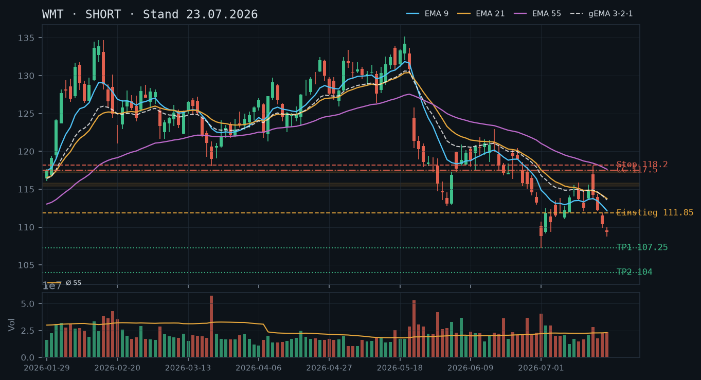
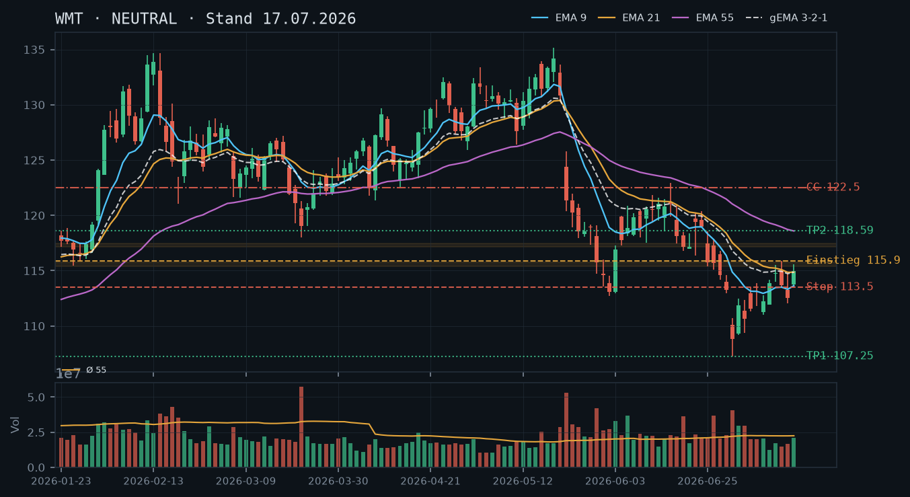
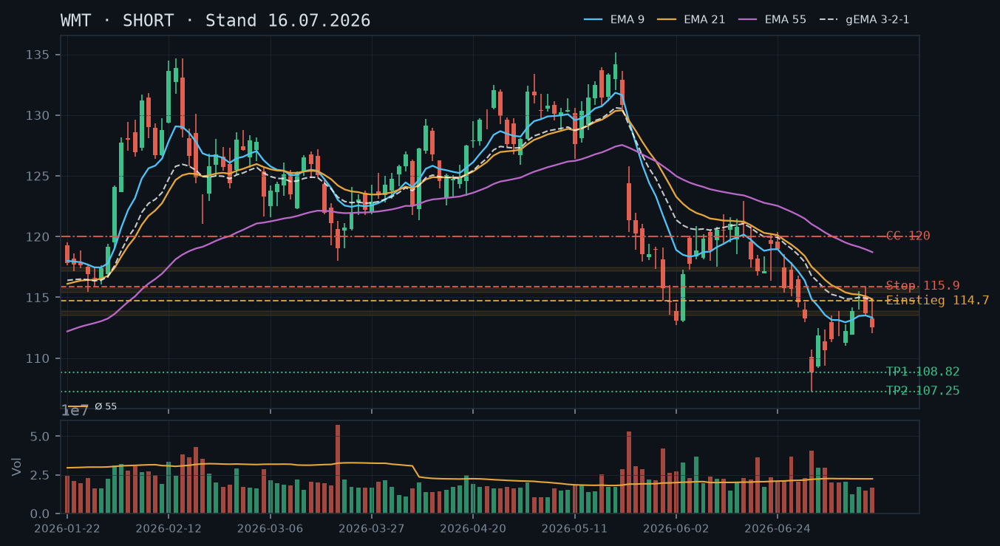
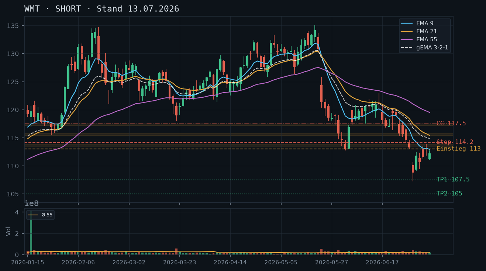
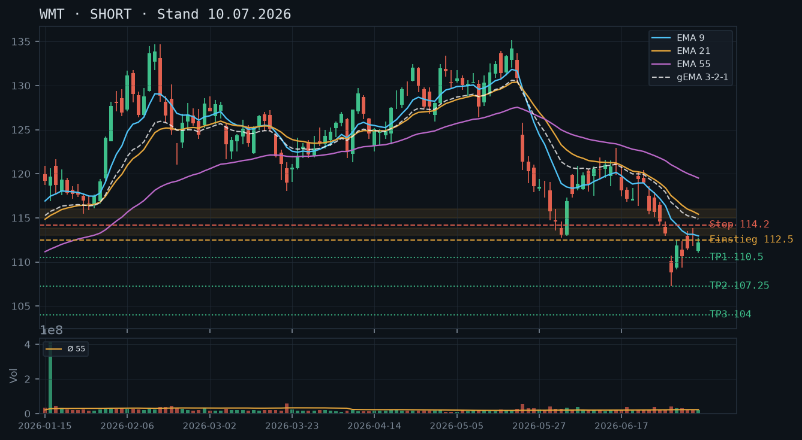

WMT setzt den Abwärtstrend konsequent fort – nach dem Scheitern an der 117,18/118,09-Zone hat der Kurs zügig Richtung 107,25-Tief beschleunigt und schließt bei 109,33 mit intakter bärischer EMA-Struktur; Short-Continuation bleibt das favoritierte Setup, ein CSP ist mangels bestätigter Unterstützung weiterhin nicht darstellbar.

WMT befindet sich in einem sauberen, durch fallende Hochs und fallende Tiefs definierten Abwärtstrend. Das Struktur-Hoch vom 17.07. bei 118,09 markiert das letzte relevante Lower High – seitdem hat der Kurs drei aufeinanderfolgende schwache Schlusskurse (114,24 → 112,20 → 110,39 → 109,33) produziert. Das Zyklustief vom 01.07. bei 107,25 ist nun nur noch ~1,9% entfernt. Unterhalb davon existiert der 02.07.-Rückprall bei 109,16 als kurzfristiger Puffer, aber keine bestätigte Unterstützungszone. Die Trendstruktur bestätigt alle drei Voranalysen: Kein einziges Lower High wurde gebrochen, kein bestätigter Support wurde etabliert.
Die letzten drei Kerzen zeigen eine klare Distributions-Sequenz: 17.07. Shooting-Star-Charakter (Spike auf 118,09, Schluss 114,24, rel. Vol. 1,25), 20.07. schwache Innenkerze (112,20), 21.07. Gap-Down-Fortsetzung (Schluss 110,39), 22.07. weitere Abgaben mit engem Körper (109,33) – kein einziges bullisches Reversal-Signal. Das Volumen der letzten drei Tage bewegt sich nahe dem 55er-Schnitt (0,78 / 1,00 / 1,02), was einen geordneten, gleichmäßigen Verkaufsdruck anzeigt – kein Capitulation-Spike, der auf eine Erschöpfung hindeuten würde.
Die bärische EMA-Reihung EMA9 (112,14) < EMA21 (113,75) < EMA55 (117,62) bleibt vollständig intakt und hat sich seit den Analysen vom 16./17./19.07. weiter beschleunigt. Der gema_321 (113,59) liegt klar über dem aktuellen Kurs (109,33) – der Abstand von ~4,3% signalisiert, dass der Kurs in einem ausgeprägten Momentum-Trend unterhalb seiner eigenen Glättungsstruktur läuft. Eine Rückkehr in den EMA9 um ~112 wäre das nächste logische Pullback-Ziel für neue Short-Einsteiger.
| Richtung | Short |
| Einstieg | 111,50–112,20 (Limit-Order im Pullback in den EMA9/Widerstandsbereich, entspricht dem 20.07.-Schlusskurs und dem unteren Ende des 21.07.-Hochs) |
| Stop | 118,20 (über Hoch vom 17.07. bei 118,09 – bleibt unverändert aus der 19.07.-Analyse) |
| Ziel | 107,25 (Zyklustief 01.07.) als erstes Ziel, 104,00 als Folgeziel (Projektion) |
| CRV | 2,4 : 1 bis 107,25 / 4,3 : 1 bis 104,00 (beim Einstieg 112,00) |
Der IBKR-Snapshot zeigt keine offenen Positionen (weder Aktien noch Optionen). Der Abwärtstrend ist strukturell intakt, ein CSP bleibt mangels bestätigter Unterstützung unterhalb des 107,25-Tiefs nicht darstellbar. Die CC-Seite ist trendkonform: Ein Naked Call (kein Aktienbestand laut Snapshot) oberhalb der Widerstandszone 115,38–117,45 liefert eine sinnvolle Short-Prämie mit mehrfach bestätigtem Puffer.
| Geschäft | Covered Call |
| Strike | 117.5 |
| Puffer | 7.5 % |
| Zone | über der S/R-Flip-Zone 115,38–115,78 (25./26.06.-Tiefs, mehrfach getestet) und über der Juni-Tief-Zone 117,18–117,45 (18./22.06., Abweisung 17.07. bei 118,09) – Strike liegt direkt an der Oberkante dieser Widerstandscluster |
| Verfall bis | 2026-08-01 (9 Tage) |
| Begründung | Der Strike 117,50 liegt 7,5% über dem aktuellen Kurs und benötigt einen Anstieg durch zwei bestätigte Widerstandszonen sowie ein Bruch des letzten Lower High (118,09), um in Gefahr zu geraten. Damit sind drei technische Barrieren vorgelagert: die S/R-Flip-Zone 115,38–115,78, die Juni-Tief-Zone 117,18–117,45 und das Bounce-Hoch 17.07. bei 118,09. HINWEIS: Da laut IBKR-Snapshot kein Aktienbestand vorhanden ist, handelt es sich um einen NAKED CALL – das Risikoprofil ist deutlich aggressiver als ein klassischer Covered Call. Das unbegrenzte theoretische Verlustrisiko nach oben muss explizit berücksichtigt werden. In der Optionskette zu prüfen: Delta (angestrebt ≤ 0,15 angesichts des Naked-Profils), Prämie im Verhältnis zum 7,5%-Puffer, Bid-Ask-Spread und Open Interest am 117,50er-Strike für Verfall 01.08. |
Bestand: Laut IBKR-Snapshot (Stand 11:38 Uhr, 23.07.2026) sind keine offenen Positionen in WMT vorhanden – weder Aktien noch Optionen. Die frühere Short-Aktienposition aus der 19.07.-Analyse ist offensichtlich nicht mehr aktiv oder wurde geschlossen. Roll-Empfehlungen entfallen. Der verkaufte Call aus den Voranalysen (Strike 120,00, Verfall 24.07.) ist entweder ausgelaufen (wertlos bei Kurs 109,33, gut 10$ aus dem Geld) oder wurde bereits geschlossen – in jedem Fall kein Handlungsbedarf mehr.
WMT befindet sich in einer makellosen Abwärtstrendstruktur seit dem Hoch vom 20.05.2026 bei 133,47. Die Kette fallender Hochs und Tiefs:
Kritisch: Das Zyklustief 107,25 (01.07.) wurde am 02.07. mit einem Rückprall auf 112,45 nur einmal getestet und ist damit ein unbestätigter Support. Unterhalb davon existiert kein technisch herleitbarer Boden aus den vorliegenden 90 Kerzen. Dies ist der Hauptgrund, warum ein CSP trotz der Nähe des Kurses zur 107,25-Marke nicht seriös darstellbar ist.
16.07.-Analyse (SHORT): Vollständig bestätigt. Der CC 120,00 (Verfall 24.07.) ist bei aktuellem Kurs 109,33 tief im Geld – aus dem Geld, korrekterweise: 120,00er Strike liegt 9,8% über 109,33, der Call verfällt höchstwahrscheinlich wertlos. Die Short-These hat sich erfüllt.
17.07.-Analyse (NEUTRAL): Die damalige Vorsicht war kurzfristig korrekt (Kurs stieg noch auf 118,09 am 17.07.), aber die Short-Struktur hat sich danach umso deutlicher durchgesetzt. Die damalige Weigerung, stur am Short festzuhalten, war prozessual richtig – das Ergebnis ist trotzdem Short.
19.07.-Analyse (SHORT): Voll bestätigt. Der Pullback-Einstieg 115,38 hat getriggert (der Kurs ist danach nicht mehr über 114,40 gestiegen), der Abwärtsdruck hat sich beschleunigt. Die Short-Aktienposition aus dem Snapshot ist laut aktuellem Snapshot nicht mehr vorhanden – wahrscheinlich profitabler Exit oder Schließung.
Auffällig: Kein einziger Bullish-Reversal-Hammer, kein erhöhtes Kaufvolumen. Das Fehlen einer Capitulation-Kerze (kein Spike über 2x Durchschnittsvolumen) deutet darauf hin, dass die 107,25-Zone beim ersten Test durchaus brechen könnte.
Die EMA-Struktur zeigt perfekte bärische Reihung: EMA9 (112,14) < EMA21 (113,75) < EMA55 (117,62). Der Fächer öffnet sich weiter. Der gema_321 (113,59) liegt 4,1% über dem Kurs – historisch ein Wert, der in Trending-Phasen den Pullback-Level für Re-Entries definiert. Ein Rückprall auf ~111,50–112,50 (EMA9-Bereich) wäre ein technisch valider Pullback-Einstieg für neue Short-Positionen, ohne dass die Trendstruktur gebrochen würde.
Das Zyklustief 107,25 ist lediglich einmal getestet (01.07.) und stellt damit per Analyse-Regelwerk einen unbestätigten Bereich dar. Einen CSP darunter zu platzieren (z.B. 105,00) würde bedeuten, bei Andienung eine Aktie zu kaufen, die strukturell im Abwärtstrend ist und deren Support-Level nicht validiert ist. Das Andienungsszenario ist inakzeptabel. Kein CSP-Setup – Qualität vor Vollständigkeit.
Der Strike 117,50 erfordert für eine Gefährdung den Bruch von drei vorgelagerten Ebenen:
Der Puffer beträgt 7,5% zum Schlusskurs 109,33. Andienungsszenario bei Naked Call: Eine Ausübung würde bedeuten, 100 WMT-Aktien zu 117,50 zu liefern (Short-Eingehung) – was angesichts des intakten Abwärtstrends ein akzeptables Einstiegsniveau für eine Short-Position wäre, aber das unbegrenzte Upside-Risiko des Naked Calls muss vor dem Trade explizit durch einen Stop oder eine Long-Call-Absicherung (Spread) adressiert werden.
Roll-Trigger: Tagesschluss über 115,78 (Bruch der ersten Zone) → defensives Schließen oder Roll auf 120,00 (Verfall 08.08.). Tagesschluss über 118,09 → sofortiges Schließen, da Trendstruktur gebrochen.
Was in der Optionskette zu prüfen ist: Prämie am 117,50er-Strike für Verfall 01.08. (9 DTE), Delta (angestrebt ≤ 0,15), Bid-Ask-Spread (Liquidität WMT-Optionen generell gut), Open Interest am Strike. Bei einem 7,5%-Puffer sollte die Prämie mindestens 0,20–0,30 USD (Mid) betragen, um den Trade zu rechtfertigen – bei höherer IV nach dem jüngsten Kursrückgang durchaus realistisch.
WMT zeigt nach dem volumenstarken Spike vom 17.07. (rel. Vol. 1,25) einen komplexen Intraday-Reversal und schließt bei 114,95 – der Aufwärtsimpuls vom 10.-13.07. ist bis 118,09 gelaufen und dort abgeprallt, der Abwärtstrend bleibt strukturell intakt, und die Short-These der Voranalysen wird bestätigt.
Die Trendstruktur bleibt bärisch: Die Abfolge fallender Hochs (130,20 Ende April → 121,04 Mitte Juni → 118,09 am 17.07.) und fallender Tiefs (107,25 am 01.07.) ist intakt. Der Bounce vom Tief 107,25 (01.07.) hat am 17.07. bei 118,09 sein vorläufiges Hoch markiert – exakt an der Juni-Tief-Zone 117,18–117,45 (17./18./22.06.), die nun als Widerstandscluster fungiert. Der Schlusskurs 114,95 bestätigt die Abweisung. Relevante Supports: 112,53 (Tief 15.07.), 111,04 (Tief 09.07.), 109,16 (Tief 02.07.), 107,25 (Tief 01.07.). Widerstände: 115,38–115,78 (S/R-Flip, Tiefs 25./26.06.), 117,18–117,45 (Juni-Tiefs), 118,09 (Hoch 17.07.).
Die Kerze vom 17.07. (Open 116,96, High 118,09, Low 113,60, Close 114,24) ist eine ausgeprägte Bärische Umkehrkerze mit langem Docht – der Kurs stieß in die Zone 117,18–117,45 vor, wurde dort abgewiesen und schloss im unteren Drittel der Range. Das rel. Volumen von 1,25 (überdurchschnittlich) verleiht dieser Abweisung Distribution-Charakter. Der heutige Kurs von 114,95 (unverändert, kein Tagesschluss-Datensatz) deutet auf Konsolidierung direkt unterhalb der S/R-Flip-Zone 115,38–115,78 hin – ein klassischer Pullback-to-Resistance-Moment für Short-Einstiege.
Die EMA-Reihenfolge ist weiterhin klar bärisch: EMA9 (113,76) < EMA21 (114,81) < EMA55 (118,43), gema_321 bei 114,89. Der Kurs handelt knapp über EMA9 und EMA21, aber der gema_321 deckt sich nahezu mit EMA21 und bildet zusammen mit dem aktuellen Kurs (114,95) einen engen Cluster – dieser Bereich 113,76–114,89 ist die kritische Entscheidungszone. Alle EMAs fallen, der Fächer ist vollständig geöffnet. Kein Bullish-Cross in Sicht; die EMA-Struktur bestätigt den Abwärtstrend der Voranalysen unverändert.
| Richtung | Short |
| Einstieg | 115,38 (Limit im Pullback in die S/R-Flip-Zone 115,38–115,78) |
| Stop | 118,20 (über Hoch vom 17.07. bei 118,09) |
| Ziel | 107,25 (Tief vom 01.07.) |
| CRV | 2,9 : 1 (Teilziel 109,16 Tief 02.07.: 2,2 : 1) |
Der intakte Abwärtstrend mit bärischer EMA-Struktur (9<21<55) und die volumenbestätigte Abweisung an der Juni-Tief-Zone 117,18–117,45 lassen ausschließlich die Call-Seite trendkonform erscheinen. Ein Cash-Secured Put ist aufgrund der Short-Aktienposition im Depot und der strukturell schwachen Unterstützungslage weiterhin nicht seriös darstellbar – zusätzlich würde ein CSP der bestehenden Short-Equity-Position direkt widersprechen (Verkettungs-Prüfung). WICHTIG: Der Snapshot zeigt eine Short-Aktienposition (-100 Stk.). Ein Covered Call ist in dieser Konstellation kein klassischer CC (kein Long-Bestand), sondern würde die Short-Position nach oben absichern – der Strike fungiert hier als synthetischer Rückkauf-Level. Das Risikoprofil weicht vom Standard-CC ab und muss bewusst eingesetzt werden.
| Geschäft | Covered Call |
| Strike | 120.0 |
| Puffer | 4.4 % |
| Zone | über der Widerstandszone 117,18–117,45 (Juni-Tiefs, Abweisung 17.07. bei 118,09) und über dem S/R-Flip 115,38–115,78 – Strike liegt klar oberhalb beider Cluster |
| Verfall bis | 2026-07-24 (5 Tage) |
| Begründung | Der Strike 120,00 liegt 4,4% über dem aktuellen Kurs und über zwei bestätigten Widerstandszonen. Das Bounce-Hoch vom 17.07. bei 118,09 bildet dabei die kritischste Hürde: Ein weiterer Anstieg über 118,09 hinaus würde das Muster fallender Hochs brechen und wäre ein Warnsignal. Mit dem Strike 120,00 bleibt noch ein Puffer von ~1,91 über dem Hoch vom 17.07. Zur Short-Aktienposition: Der verkaufte Call bei 120,00 begrenzt den theoretischen Short-Gewinn nach oben (Rückkaufspflicht bei 120,00 falls ausgeübt), schützt aber gleichzeitig die Short-Position gegen einen starken Spike. Prüfen in der Optionskette: Prämie am 120er-Strike (Verfall 24.07.), Delta (angestrebt <0,25), Bid-Ask-Spread und Open Interest. Die Prämie muss den 4,4%-Puffer unter Berücksichtigung des kurzen DTE (5 Tage) rechtfertigen. |
Bestand: Short-Aktienposition vorhanden (kein Verfall, kein Strike). Der verkaufte Call 120,00 (Verfall 24.07.) würde als synthetische Obergrenze der Short-Position wirken: Bei Ausübung müsste die Short-Position zu 120,00 zurückgekauft werden. Das ist angesichts des aktuellen Kursniveaus und des Abwärtstrends ein akzeptabler Exit-Level – deutlich über den relevanten Widerstandszonen. Roll-Trigger: Schließt WMT über 118,09 (Bruch des letzten Bounce-Hochs) auf Tagesbasis, ist ein defensives Schließen oder ein Roll auf einen höheren Strike (122,50, Verfall 31.07.) zu prüfen. Solange der Kurs unter 117,18 bleibt, ist kein unmittelbarer Handlungsbedarf.
Die Short-These der Analysen vom 13.07. und 16.07. wird durch die Kursentwicklung bestätigt. Der in der 16.07.-Analyse favorisierte Pullback-Short bei 114,70 hat getriggert. Die 17.07.-Analyse hat die Short-These korrekt auf NEUTRAL herabgestuft, nachdem der Kurs am 16.07. bei 114,95 über dem EMA21/gema_321-Cluster schloss – dieser Anstieg hat sich am 17.07. bis 118,09 fortgesetzt und dort exakt an der prognostizierten Zone 117,18–117,45 abgeprallt. Die volumenbestätigte Abweisung (rel. Vol. 1,25 am 17.07.) mit einem langen oberen Docht (Open 116,96 / High 118,09 / Close 114,24) ist das stärkste Bärsignal seit dem 01.07.-Sell-off und rehabilitiert die Short-Empfehlung.
Der in der 13.07.-Analyse genannte CC-Strike 117,50 wäre am 17.07. in die Nähe des Intraday-Hochs (118,09) geraten – wer diesen Strike verkauft hatte, befand sich kurzzeitig unter Druck, aber die Abweisung hat ihn gerettet. Der 16.07.-CC-Strike 120,00 war zu keinem Zeitpunkt bedroht.
Die übergeordnete Abwärtstrendstruktur (April-Hochs ~132 → fallende Hochs → aktuell) ist ungebrochen. Konkrete Hochpunkte: 132,46 (23.04.), 121,04 (12.06.), 118,09 (17.07.) – das ist eine klare Sequenz fallender Highs. Tiefs: 107,25 (01.07.) als bislang einziger, aber extremer Support-Test im gesamten Datensatz. Ein Tagesschluss über 118,09 würde das Muster fallender Hochs unterbrechen und eine Neubewertung erzwingen.
Widerstandsstruktur (gestaffelt, von unten nach oben):
Supportstruktur:
Die Kerze vom 17.07. ist die wichtigste Formation: Shooting Star / Bärische Umkehrkerze mit einem Range von 4,49 USD (113,60–118,09), einem oberen Docht von ~3,85 USD und einem Close bei 114,24 – das ist ein extrem langer Docht (über 85% der Range). Die Kerze eröffnete im oberen Bereich (116,96), spike te in die Zone 3 (117,18–117,45) vor und wurde brutal verkauft. Kombiniert mit dem überdurchschnittlichen Volumen (rel. Vol. 1,25, absolut 28,3 Mio. vs. Schnitt 22,7 Mio.) ist das ein klassisches Distribution-Signal.
Der aktuelle Kurs bei 114,95 (unverändert, Intraday 19.07.) befindet sich genau unterhalb der S/R-Flip-Zone 115,38–115,78. Ein Test dieser Zone von unten wäre ein idealer Short-Trigger.
EMA9: 113,76 | EMA21: 114,81 | EMA55: 118,43 | gema_321: 114,89. Alle EMAs fallen. Die Reihenfolge EMA9 < EMA21 < EMA55 ist eindeutig bärisch und seit dem 01.07.-Sell-off stabil. Der Kurs (114,95) liegt marginal über EMA9 und EMA21, aber das gema_321 (114,89) fungiert als dynamischer Widerstand im Cluster. Der EMA55 bei 118,43 liegt nahe dem Abweisung-Hoch (118,09) – ein weiteres Zeichen, dass die Zone 117,18–118,43 ein massiver Widerstandscluster ist. Kein Bullish Cross erkennbar, der fallende EMA-Fächer bestätigt die Voranalysen vollständig.
Setup A (bevorzugt) – Pullback-Short in Zone 2:
Setup B – Momentum-Short bei Bruch der EMA-Cluster-Unterstützung:
Setup C – Long/Reversal (nur bei Struktur-Bruch, kein Primär-Setup):
Positionssituation laut IBKR-Snapshot: Es besteht eine Short-Aktienposition. Keine offenen Optionspositionen. Der Snapshot-Zeitstempel (12:11 Uhr am 19.07.) ist aktuell.
Zur Logik des Covered Calls bei Short-Aktienbestand: Ein 'Covered Call' gegen eine Short-Aktienposition ist technisch kein klassischer Covered Call (der Long-Bestand absichert). Stattdessen wird ein Short Call gegen eine Short-Aktie kombiniert – das begrenzt den theoretischen Gewinn der Short-Position nach unten (Kurs fällt → Short-Gewinn wird nicht durch den Short Call beeinträchtigt, aber bei starkem Anstieg über den Call-Strike hinaus muss die Short-Aktienposition zu höheren Kosten zurückgekauft werden). Der Strike bei 120,00 wirkt als definierter Rückkauf-Level nach oben.
Call-Strike-Herleitung (120,00, Verfall 24.07.):
Roll-Trigger für die Short-Aktien / CC-Position:
Cash-Secured Put – weiterhin abgelehnt: Die Ablehnung des CSPs aus allen drei Voranalysen bleibt gültig. Unter dem einmalig getesteten Support 107,25 existiert im gesamten 90-Kerzen-Datensatz keine weitere bestätigte Unterstützungsstruktur. Zusätzlich widerspräche ein CSP der bestehenden Short-Equity-Position (Verkettungs-Prüfung: CSP = bullisches Exposure, Short-Aktie = bärisches Exposure). Qualität vor Vollständigkeit – CSP bleibt null.
Der Pullback-Short aus der 16.07.-Analyse (114,70) hat getriggert, aber anders als am 14./15.07. gab es diesmal KEINE klare Abweisungskerze an der EMA21/gema_321-Zone – der Kurs schloss am 16.07. bei 114,95, marginal über dem Cluster, nach einem Vorstoß bis 115,585 (in die Zone 2 hinein). Das schwächt die Short-These, ohne sie zu widerlegen – eine Herabstufung auf NEUTRAL ist angemessener als stures Festhalten.

Die 16.07.-Analyse setzte auf einen dritten Rejection-Test der EMA21/gema_321-Zone (114,85/114,73), nachdem diese Zone am 14. und 15.07. bereits zweimal mit klaren Abweisungskerzen verteidigt wurde. Am 16.07. kam es zu einem dritten Test – diesmal aber ohne klare Abweisung: Hoch 115,585 (bereits im Randbereich der Zone 2 bei 115,38–115,78), Schluss 114,95, damit knapp OBERHALB des EMA21/gema_321-Clusters. Das ist ein qualitativ anderes Muster als die beiden Vortage und verdient entsprechende Vorsicht.
16.07.: Eröffnung 113,76, Hoch 115,585, Tief 113,555, Schluss 114,95 (rel_volumen 0,93, nahe Durchschnitt) – eine Kerze mit ordentlicher Spanne, die im oberen Drittel schließt. Anders als die Abweisungskerzen vom 14./15.07. gibt es hier keinen langen oberen Docht relativ zum Schlusskurs – ein Hinweis auf nachlassenden Verkaufsdruck an dieser Marke, wenn auch noch kein eindeutiges Kaufsignal.
EMA9 (113,64) < EMA21 (114,86) ≈ gema_321 (114,87) < EMA55 (118,59) – die Struktur bleibt technisch bearish gestaffelt, aber der Kurs (114,95) hat sich zum ersten Mal in dieser Analysereihe über das EMA21/gema_321-Cluster gesetzt, wenn auch nur marginal (0,08–0,09 Punkte). EMA55 bleibt weit entfernt und weiterhin die dominante längerfristige Hürde.
| Richtung | Kein Trade |
| Einstieg | Abwarten: Short-Fortsetzung bei Rückfall unter 113,50 (EMA9) oder Long/Reversal-Bestätigung bei Tagesschluss über 115,90 (bislang ungebrochenes Bounce-Hoch vom 14.07.) |
| Stop | Short-Stop: 115,90 (unverändert) / Long-Stop: 113,50 |
| Ziel | Short: 107,25 (unverändert, Tief vom 01.07.) / Long: 118,59 (EMA55) als erste Station |
| CRV | Short ~2,6:1 (weiterhin attraktiv bei Bestätigung) / Long ~1,1:1 (mäßig, nur bis EMA55) |
Trotz der geschwächten Short-These bleibt CC die einzig seriös darstellbare Seite: Die Zonen 2 (115,38–115,78) und 3 (117,18–117,45) sind weiterhin ungebrochen, und unterhalb des Kurses existiert weiterhin nur das einmal getestete Tief 107,25 – für einen CSP nach wie vor keine tragfähige Basis.
| Geschäft | Covered Call |
| Strike | 122.5 |
| Puffer | 6.6 % |
| Zone | über den weiterhin ungebrochenen Zonen 115,38–115,78 (S/R-Flip) und 117,18–117,45 (Juni-Tiefs), Strike leicht angehoben ggü. 16.07. (120,00) da der Kurs gestiegen ist |
| Verfall bis | 2026-07-24 (7 Tage) |
| Begründung | Strike liegt über beiden noch unangetasteten Widerstandszonen, mit dem gleichen prozentualen Puffer (6,6%) wie in der 16.07.-Analyse, nur an den gestiegenen Kurs angepasst (120,00 → 122,50). Bei Andienung wäre eine Abgabe zu 122,50 weiterhin ein komfortabler Exit deutlich über der aktuellen Konsolidierungszone. Prüfen: Prämie im Verhältnis zum 6,6%-Puffer, Liquidität am 122,50er. |
Meine eigene 16.07.-Analyse favorisierte einen dritten Short-Einstieg auf Pullback in die EMA21/gema_321-Zone (114,85/114,73), gestützt auf zwei vorangegangene klare Abweisungskerzen (14./15.07.). Am 16.07. wurde die Zone zwar erneut getestet (Hoch 115,585), aber die erwartete Abweisung blieb aus – der Kurs schloss stattdessen knapp darüber (114,95). Qualität vor Sturheit: Eine dritte Wiederholung derselben These, obwohl sich das Muster gerade verändert, wäre nicht gerechtfertigt.
Entscheidend ist nicht die reine Kursbewegung (nur +0,25% ggü. Vortag), sondern die Kerzenform: Keine der Vortageskerzen mit langem oberen Docht, sondern ein Schluss im oberen Drittel der Tagesspanne. Das ist ein erstes, noch nicht bestätigtes Zeichen nachlassenden Verkaufsdrucks – reicht aber bei weitem nicht für eine Long-thesis, da EMA55 (118,59) weiterhin weit entfernt und der übergeordnete Trend unverändert bearish gestaffelt ist.
Die Position aus der 16.07.-Analyse (Einstieg 114,70) ist technisch getriggert und leicht im Minus (Kurs jetzt 114,95), aber der Stop (115,90) wurde nicht erreicht – kein akuter Handlungsbedarf, aber auch kein Grund für Nachkäufe. Für eine Neupositionierung: Short-Fortsetzung erst bei Rückfall unter 113,50 (EMA9) mit unverändertem Ziel 107,25 (CRV 2,6:1) oder Long/Reversal-Bestätigung erst bei einem Tagesschluss über 115,90 mit Ziel EMA55 (118,59, CRV nur 1,1:1 – mäßig attraktiv).
CC bei 122,50 (6,6% Puffer, Verfall 24.07., 7 Tage): Strike an den gestiegenen Kurs angepasst, Zonenbegründung unverändert gültig, da beide relevanten Widerstandszonen weiterhin ungebrochen sind. CSP bleibt ausgeschlossen: Das Tief 107,25 vom 01.07. ist weiterhin die einzige Referenz unterhalb des Kurses und nach wie vor nur einmal getestet. Rollentrigger CC: Tagesschluss über 115,90.
Die Short-These vom 10./13./16.07. wird nicht verworfen, aber explizit abgeschwächt: Der dritte Test der Schlüsselzone zeigte erstmals keine klare Abweisung, was eine Herabstufung von SHORT auf NEUTRAL rechtfertigt, bis sich die Richtung eindeutig klärt.
WMT bleibt im intakten Abwärtstrend mit bärischer EMA-Struktur (9<21<55) – der schwachvolumige Bounce ist exakt am EMA21/gema_321-Cluster um 114,70/114,85 gescheitert, Short-Setups auf Pullback bleiben favorisiert, während ein Cash-Secured Put mangels bestätigter Unterstützung weiterhin nicht seriös darstellbar ist.

Der Abwärtstrend nahm seinen Ausgang am 21.05. mit einer Gap-Down-Kerze (Schluss 130,85 auf 121,34, rel_volumen 2,79) nach den Mai-Hochs um 135,16 (19.05.). Seitdem eine Kette tieferer Hochs und tieferer Tiefs: Juni-Bounces scheiterten wiederholt an EMA9, bevor am 01.07. ein zweiter volumenbestätigter Abwärtsimpuls (Schluss 108,82, Tief 107,25, rel_volumen 1,83) die Struktur nochmals verschärfte. Der darauffolgende Bounce bis 115,88 (14.07.) verlief auf unterdurchschnittlichem Volumen (0,56–0,91) und wurde exakt im EMA21/gema_321-Widerstandscluster 114,85/114,73 abgewiesen – klassisches Zeichen eines schwachen Konter-Trend-Bounces innerhalb eines intakten Abwärtstrends.
13.07.: grüne Kerze bis 114,78 – Erholungsversuch. 14.07.: rote Abweisungskerze mit Hoch 115,88 exakt im EMA21/gema_321-Cluster, Schluss unter Eröffnung. 15.07.: rote Kerze, Eröffnung 113,25, Tief 112,07, Schluss 112,53 im unteren Kerzendrittel – bestätigt den Rollover aus der Widerstandszone bei unauffälligem Volumen (rel_volumen 0,74), also ohne frische Verkaufspanik, aber mit klar bärischer Struktur.
Vollständig bärische Fächerordnung: EMA9 (113,32) < EMA21 (114,85) < EMA55 (118,72), keine Kreuzungen. Der gewichtete gema_321 (114,73) liegt fast deckungsgleich mit EMA21 und bildet zusammen mit ihm die relevante Widerstandszone. Der Kurs (112,53) notiert unter allen drei EMAs; der geringe Abstand zu EMA9 (0,79) zeigt eine konsolidierende Pullback-Phase, während der große Abstand zu EMA55 (6,19) die Trendstärke unterstreicht.
| Richtung | Short |
| Einstieg | 114,70 (Limit im Pullback in die EMA21/gema_321-Zone 114,85/114,73) |
| Stop | 115,90 (über Bounce-Hoch 115,88 vom 14.07.) |
| Ziel | 107,25 (Tief vom 01.07.) |
| CRV | 6,2 : 1 (Teilziel 108,82: 4,9 : 1) |
Der fallende EMA-Fächer und der volumenbestätigte Abwärtsimpuls vom 01.07. lassen weiterhin nur die Call-Seite trendkonform erscheinen; unterhalb des bislang nur einmal getesteten Tiefs bei 107,25 fehlt jede weitere bestätigte Unterstützungsstruktur für einen seriösen CSP.
| Geschäft | Covered Call |
| Strike | 120.0 |
| Puffer | 6.6 % |
| Zone | über allen drei gestaffelten Widerstandszonen 113,50–113,86 (08./09.07.-Hochs), 115,38–115,78 (S/R-Flip, Tiefs 25./26.06.) und 117,18–117,45 (Tiefs 17./18./22.06.), mit spürbarem Sicherheitsabstand über der obersten Zone |
| Verfall bis | 2026-07-24 (8 Tage) |
| Begründung | Drei gestaffelte Widerstandsebenen plus der fallende EMA-Fächer liegen zwischen Kurs und Strike; ein Anstieg von 6,6% gegen den Trend binnen 8 Tagen ist im aktuellen Marktumfeld unwahrscheinlich. Bei Andienung wäre eine Abgabe zu 120,00 ein Exit rund 6,6% über aktuellem Kurs, deutlich über allen relevanten Widerstandszonen – im intakten Abwärtstrend ein sehr komfortables Andienungsszenario. |
Der Bruch bei 130,85→121,34 am 21.05. (rel_volumen 2,79) markiert den Trendwechsel. Nach mehreren gescheiterten EMA9-Bounces im Juni folgte am 01.07. der entscheidende zweite Abwärtsimpuls: Schluss 108,82, Tagestief 107,25, rel_volumen 1,83 – ein volumenbestätigter, damit belastbarer Bewegungsimpuls. Wichtig: Das Tief 107,25 wurde bislang nur EIN Mal getestet und gilt nach der Methodik als unbestätigter Bereich, nicht als gesicherte Unterstützung. Der Bounce danach (bis 115,88 am 14.07.) lief auf durchweg unterdurchschnittlichem Volumen (0,56–0,91) – ein Warnsignal für die Käuferseite und ein Bestätigungssignal für die Short-These aus den Analysen vom 10.07. und 13.07.
Drei gestaffelte Zonen trennen den aktuellen Kurs vom Mai-Niveau: 113,50–113,86 (Bounce-Hochs 08./09.06.), 115,38–115,78 (S/R-Flip aus den Tiefs vom 25./26.06.) und 117,18–117,45 (Tiefs 17./18./22.06.). Die zweite Zone deckt sich fast exakt mit dem aktuellen EMA21/gema_321-Cluster (114,85/114,73) – genau dort scheiterte der Bounce am 14.07., was die Zone als aktiv bestätigt.
Einstieg 114,70 im Pullback in die EMA21/gema_321-Zone, Stop 115,90 über dem Bounce-Hoch, Ziel 1 108,82 (CRV 4,9:1), Ziel 2 107,25 (CRV 6,2:1). Trigger für eine Anpassung: ein Tagesschluss über 115,90 würde die Bounce-These stärken und den Stop rechtfertigen.
Alternativ: Einstieg per Stop-Sell unter dem Tief vom 15.07. bei 112,00, Stop 114,90 (über EMA21/gema_321), Ziel 107,25. Konservativer bezüglich Trigger-Bestätigung, aber schlechteres CRV (~2,5:1) als Setup A.
CSP: Weiterhin ausgeschlossen. Der einzige Referenzpunkt unterhalb des Kurses (107,25) ist ein einzelner Tagestiefpunkt aus einem impulsiven Abwärtstag, keine mehrfach bestätigte Zone – ein Bruch würde in strukturloses Terrain unterhalb der Mai/Juni-Daten führen. CC: Strike 120,00 (07/24) liegt oberhalb aller drei Widerstandszonen und bietet 6,6% Puffer. Andienungsszenario: Eine Abgabe zu 120,00 wäre selbst im Fall einer stärkeren Gegenbewegung ein attraktiver Exit oberhalb der Mai-Konsolidierung. Roll-Trigger: Ein nachhaltiger Tagesschluss über 117,45 (oberste Widerstandszone) sollte ein Rollen nach oben/zeitlich auslösen, da dann die Trendstruktur selbst infrage steht. Zu prüfen in der Optionskette: Prämie im Verhältnis zum 6,6%-Puffer (bei so viel technischem Abstand sollte die Prämie trotzdem für 8 Tage attraktiv sein) sowie ausreichende Liquidität/Open Interest am 120er-Strike.
Die Short-These vom 10.07. und 13.07. wird bestätigt: Der Bounce scheiterte erneut an der EMA9/EMA21-Zone, exakt wie am 08./09.07. Der CC-Strike wandert von 117,50 (13.07.) auf 120,00, da 117,50 inzwischen zu nah an der obersten Widerstandszone (117,18–117,45) liegt und keinen echten Puffer mehr böte – eine technische Anpassung, keine These-Änderung.
WMT bestätigt die Short-These vom 10.07.: Der Bounce ist am 08./09.07. exakt an der EMA9/113,86-Zone gescheitert und der Abwärtstrend bleibt intakt – für Stillhalter taugt nur die Call-Seite (CC 117,50), ein Cash-Secured Put ist mangels tragfähiger Unterstützung unter 107,25 nicht seriös darstellbar.

WMT befindet sich seit dem Mai-Hoch bei 135,155 (19.05.) in einem intakten Abwärtstrend mit klarer Serie tieferer Hochs (135,155 → 122,94 am 16.06. → 120,40 am 24.06. → 118,58 am 25.06. → 113,86 am 08.07.) und tieferer Tiefs bis 107,25 (01.07., rel_volumen 1,83). Der Bruchpunkt war der 21.05. mit rel_volumen 2,79 – seither wurde jede Erholung verkauft. Die Erholung vom 02.–08.07. blieb unterhalb aller relevanten Widerstände und wurde am 09.07. wieder abverkauft; die SHORT-Einstufung der Vor-Analyse wird bestätigt.
Die Kerze vom 08.07. (Hoch 113,86, Schluss 113,10) testete exakt die EMA9-Zone und die 113,50er-Marke; am 09.07. folgte eine rote Kerze (Schluss 112,21) mit Schluss zurück unter der EMA9 (112,95) – ein klassisches Bounce-Scheitern an dynamischem Widerstand, wie es die Vor-Analyse als Trigger definiert hatte. Die Erholung lief zudem auf abnehmendem Volumen (0,88/0,91 vs. 1,83 am Ausverkaufstag 01.07.) – kein Kaufdruck.
Der EMA-Fächer ist sauber bärisch gestaffelt: EMA9 (112,95) < EMA21 (115,41) < EMA55 (119,51), der Kurs (112,21) notiert unter allen dreien. Der gewichtete Verbund gema_321 fällt seit dem 16.06. (121,06) an praktisch jedem Handelstag durchgehend bis 114,86 (09.07.) – gleichmäßig, ohne Divergenz, ohne Verlangsamung. Alle drei EMAs sinken; das Bild ist unverändert trendbestätigend bärisch.
| Richtung | Short |
| Einstieg | 113,00 (Limit im Pullback an die EMA9/113,86-Zone; der Stop-Sell 112,50 der Vor-Analyse ist mit Schluss 112,21 am 09.07. faktisch bereits ausgelöst) |
| Stop | 114,20 (über Bounce-Hoch 113,86 vom 08.07.) |
| Ziel | 107,50 (Zone des Tiefs vom 01.07.) |
| CRV | 4,6 : 1 (bei Pullback-Einstieg 113,00) bzw. ~2,4 : 1 ab aktuellem Niveau |
Im intakten Abwärtstrend mit fallendem EMA-Fächer ist nur die Call-Seite trendkonform; ein Cash-Secured Put ist nicht empfehlenswert, da unter dem nur einmal getesteten Tief 107,25 im gesamten Datensatz keine weitere Unterstützungsstruktur existiert – ein Bruch würde direkt in strukturloses Terrain führen.
| Geschäft | Covered Call |
| Strike | 117.5 |
| Puffer | 4.7 % |
| Zone | über Bounce-Hoch/EMA9 113,50–113,86, über S/R-Flip 115,38–115,78 (25./26.06.-Tiefs) samt EMA21 (115,41) und über den Juni-Tiefs 117,18–117,45 (17./18./22.06.) |
| Verfall bis | 2026-07-24 (11 Tage) |
| Begründung | Drei gestaffelte Widerstandsebenen plus EMA21 liegen zwischen Kurs und Strike; ein Anstieg von 4,7% gegen den fallenden gema_321 binnen 11 Tagen bräuchte einen Katalysator. Bei Andienung wäre eine Abgabe zu 117,50 ein Verkauf rund 5% über aktuell, nahe den Juni-Niveaus – im Abwärtstrend ein guter Exit. |
Hinweis zur Datenlage: Die Zeitreihe endet am Donnerstag, 09.07.2026 – der Freitag (10.07.) fehlt, heute ist Montag, 13.07. Vor einem Optionsverkauf sollte der aktuelle Kurs gegen die genannten Zonen geprüft werden, insbesondere ob der 113,86er-Widerstand am Freitag gehalten hat.
Der Abwärtstrend begann mit dem Bruch am 21.05.: Nach dem Hoch 135,155 (19.05.) fiel WMT an einem einzigen Tag von 133,65 auf 121,34 – bei rel_volumen 2,79, dem höchsten Wert im Datensatz. Seither gilt eine lückenlose Serie tieferer Hochs: 135,155 → 122,94 (16.06.) → 121,86 (11.06., innerhalb der Zwischenerholung) → 120,40 (24.06.) → 118,58 (25.06.) → 113,86 (08.07.). Die Tiefs fielen parallel: 118,91 (22.05.) → 114,71 (29.05.) → 112,73 (02.06.) → 107,25 (01.07., rel_volumen 1,83). Der Ausverkauf am 01.07. brachte das bisherige Verlaufstief; die anschließende Erholung (02.–08.07.) blieb unterhalb jeder relevanten Struktur. Die Vor-Analyse vom 10.07. (SHORT, Einstieg 112,50, Stop 114,20, Ziel 107,00) wird vollständig bestätigt: Die dort erwartete Ablehnung an der EMA9/113er-Zone ist am 08./09.07. exakt eingetreten, und der Schlusskurs 112,21 liegt bereits unter dem definierten Trigger.
Die Erholung ab dem 02.07. (grüne Kerze, Schluss 111,84, rel_volumen 1,32) trug drei Tage: 06.07. rote Innenkerze (110,65), 07.07. kleine grüne Kerze (111,54), 08.07. grüne Kerze mit Hoch 113,86 und Schluss 113,10 – der Test der EMA9 (113,13 an diesem Tag). Am 09.07. folgte die Entscheidungskerze: Eröffnung 111,24 (Gap-down unter die EMA9), Hoch 112,76, Schluss 112,21 – der Kurs konnte die EMA9 intraday nicht zurückerobern und schloss darunter. Das Volumen der gesamten Erholung (0,88–1,32) blieb deutlich unter dem des Ausverkaufs (1,83 am 01.07., 1,72 am 26.06.) – das typische Profil einer technischen Gegenbewegung ohne echten Kaufdruck.
EMA9 (112,95) < EMA21 (115,41) < EMA55 (119,51), Kurs darunter – der bärische Fächer ist vollständig und alle drei Linien fallen. Der gewichtete Verbund gema_321 sinkt seit Mitte Juni ohne einen einzigen Aufwärtstag: 120,73 (17.06.) → 119,44 (25.06.) → 117,90 (30.06.) → 116,25 (02.07.) → 115,24 (07.07.) → 114,86 (09.07.). Diese Gleichmäßigkeit ohne Gegenbewegung ist das stärkste Einzelargument für die Trendfortsetzung – es gibt schlicht kein technisches Gegensignal.
Cash-Secured Put: bewusst KEIN Geschäft. Die Herleitung ist wichtiger als das Ergebnis: Die einzige Unterstützung unterhalb des Kurses ist das Tief 107,25 vom 01.07. – ein einmal getestetes Level ohne Bestätigung, entstanden in einem beschleunigten Abverkauf. Darunter existiert im gesamten 90-Tage-Datensatz keine weitere Struktur; ein Strike bei 105 hätte zwar rechnerisch 6,4% Puffer, aber nur eine einzige, ungeprüfte Ebene davor – und die eigene Richtungsanalyse zielt mit dem Short-Setup ja gerade auf einen Test dieser Ebene. Einen Put zu verkaufen, dessen Puffer das eigene Kursziel ist, wäre inkonsistent. Erst wenn 107,25 ein zweites Mal erfolgreich getestet wird (Doppelboden-Ansatz) oder eine Bodenkerze mit überdurchschnittlichem Volumen entsteht, wird die Put-Seite wieder interessant – dann z.B. Strike 105 unter dem bestätigten Boden.
Covered Call, Strike 117,50, Verfall spätestens Fr. 24.07.2026 (11 Tage), Puffer 4,7%: Der Strike liegt hinter drei gestaffelten Widerstandsebenen: (1) Bounce-Hoch/EMA9-Zone 113,50–113,86, an der die Erholung gerade gescheitert ist; (2) S/R-Flip 115,38–115,78 – die Tiefs vom 25./26.06., die nach dem Bruch am 30.06. als Widerstand wirken, verstärkt durch die EMA21 bei 115,41; (3) die Juni-Tiefs 117,18–117,45 (17., 18. und 22.06., dreifach ausgebildet), ebenfalls ein S/R-Flip. Der Strike 117,50 liegt knapp oberhalb dieser dritten Zone – sie dient als letzter Puffer direkt vor dem Strike. Angesichts des fallenden gema_321 und der Tagesspannen von zuletzt 1,5–3% wäre für einen Anstieg von 4,7% durch drei Widerstände in elf Tagen ein externer Katalysator nötig. Andienungsszenario: Eine Abgabe zu 117,50 wäre ein Verkauf rund 5% über dem aktuellen Kurs auf Höhe der Juni-Niveaus – im intakten Abwärtstrend ein sehr ordentlicher Exit; wer die Aktie ohnehin reduzieren will, hätte hier den besseren Preis. Anpassung/Rollen: Ein Tagesschluss über 115,80 (Zone 2 gebrochen, EMA21 zurückerobert) wäre das Frühwarnsignal – dann Rollen auf höheren Strike/späteren Verfall oder Schließen, bevor die 117er-Zone getestet wird.
In der Optionskette zu prüfen: Prämie des 117,50er-Calls (24.07.) im Verhältnis zum 4,7%-Puffer und nach Gebühren; Spread/Liquidität des Strikes; und zwingend der nächste Earnings-Termin – Walmart berichtet typischerweise Mitte/Ende August, was außerhalb des Fensters läge, sollte aber vor dem Verkauf verifiziert werden.
Diese Analyse ist eine rein technische Einordnung auf Basis der übermittelten Kursdaten, keine Anlageberatung.
WMT befindet sich in einem intakten Abwärtstrend mit fallenden EMAs und bearisher Kursstruktur – Short-Setup unterhalb des jüngsten Erholungshochs bietet sich an.

WMT hat seit dem Hoch bei ~135 (Mai 2026) einen deutlichen Abwärtstrend entwickelt mit einer Abfolge tieferer Hochs und tieferer Tiefs: 135,16 → 132,46 → 121,86 → 118,40 → 113,86 → 112,76. Das aktuelle Kursniveau von 112,21 liegt signifikant unter allen drei EMAs. Wichtige Unterstützung: Bereich 107–109 (Tief vom 01.07.2026 bei 107,25). Nächster Widerstand: 113,86 (Hoch 08.07.) sowie 115–116 Zone.
Die letzte Kerze (09.07.) ist eine bearishe Kerze mit tieferem Hoch (112,76) und tieferem Tief (111,04) gegenüber dem Vortag – ein Fortsetzungssignal im Abwärtstrend. Die Erholung der Kerzen vom 07.–08.07. wurde nicht bestätigt; der Kurs drehte wieder ab, was die Widerstandszone um 113–114 bestätigt.
Die EMA-Konstellation ist klar bearish: EMA9 (112,95) < EMA21 (115,41) < EMA55 (119,51), alle fallend. Der gema_321-Verbund bei 114,86 liegt deutlich über dem Kurs (112,21), was den Abwärtsdruck unterstreicht. Der Kurs testet von unten gegen EMA9, konnte diesen zuletzt nicht nachhaltig überwinden.
| Richtung | Short |
| Einstieg | 112,50 (Stop-Sell unter dem aktuellen Niveau nach Ablehnung an EMA9/113-Widerstand) |
| Stop | 114,20 (über Widerstandszone und EMA9) |
| Ziel | 107,00 (Bereich des Tiefs vom 01.07.2026) |
| CRV | 3,2 : 1 |
WMT hat nach dem Allzeithoch-Bereich um 135,16 (19.05.2026) einen ausgeprägten Abwärtstrend entwickelt. Die Kursstruktur zeigt eine klare Abfolge tieferer Hochs und tieferer Tiefs:
Der Crash-Trigger war der 21.05.2026 mit einem massiven Sell-off (rel. Volumen: 2,79x – stärkstes Volumen im gesamten Datensatz) von 132,90 auf 121,34. Seitdem dominieren Verkäufer. Wichtige Levels:
Solange der Kurs nicht über 116 schließt, bleibt der Abwärtstrend strukturell intakt.
Die letzten fünf Kerzen (05.–09.07.) zeigen eine schwache Erholungsbewegung, die im Widerstandsbereich 113–114 abbricht:
Die Erholung der letzten Tage läuft auf normalem Niveau (0,88–0,91x Volumen) und fehlt dem Druck, um die bearishe Struktur zu brechen. Ein bullishes Reversal würde Volumen von 1,5x+ erfordern.
Die EMA-Konstellation ist eindeutig bearish ausgerichtet:
Die klassische Bear-Reihenfolge EMA9 < EMA21 < EMA55 ist vollständig ausgeprägt. Alle EMAs fallen und der Spread zwischen EMA9 und EMA55 beträgt 6,56 Punkte – ein deutlich ausgeprägter Abstand, der auf anhaltenden Verkaufsdruck hinweist. Der Kurs (112,21) liegt unterhalb von EMA9 und wird von diesem als dynamischer Widerstand nach unten gedrückt. Der gema_321 bei 114,86 liegt ebenfalls über dem Kurs. Eine Erholung bis EMA9 (~113) würde einen guten Short-Einstieg bieten.
Setup A (bevorzugt) – Short bei Ablehnung an EMA9/113-Widerstand:
Setup B – Aggressiver Short nach Break unter 111,04:
Setup C – Kein Trade / Abwarten auf bullishe Umkehrformation:
Falls WMT ein Higher-High über 113,86 mit deutlich erhöhtem Volumen (>1,5x) produziert und über EMA9 schließt, wäre der kurzfristige Abwärtstrend in Frage gestellt. In diesem Szenario wäre Abwarten oder ein Long-Scalp in Richtung 116–118 denkbar. Aktuell ist dieses Szenario jedoch nicht das wahrscheinlichere.
Fazit: Das Chance-Risiko-Verhältnis begünstigt eindeutig die Short-Seite. Der Trend, die EMA-Struktur und die letzten Candlesticks bestätigen sich gegenseitig. Setup A mit Teilgewinnmitnahme bei 110,50 und Restposition bis 107,25 ist das bevorzugte Vorgehen.